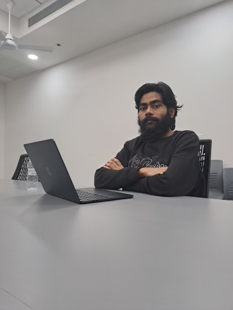

Currently exploring the deep connections between mathematical structures and physical theory. I'm reading through Ramanujan's Lost Notebook for field theory applications, learning positive geometry for scattering amplitudes, and working on attosecond quantum dynamics simulations. My journey spans quantum mechanics, field theory, and computational physics—documenting every step with code, notes, and simulations.
I am a researcher based in Bihar, India, with a strong foundation in both Physics and Mathematics. Currently pursuing an M.Sc. in Mathematics at Mangalayatan University (2024-Present), I combine rigorous mathematical structures (Number Theory, Complex Analysis, Special Functions) with high-energy physics applications.
My research spans from investigating Ramanujan's Lost Notebook identities for field-theoretic applications to exploring Positive Geometry in Scattering Amplitudes. I'm particularly interested in QCD kinematics, twistor-space geometry, and amplituhedron formulations.
Theoretical Physics: Quantum Mechanics, Quantum Field Theory, Effective Field Theory, Scattering Amplitudes, Chiral Perturbation Theory.
Programming & Tools: Python, C++, Java, LaTeX, Bash/Terminal.
Visit my science blog Think.AI where I share insights on AI, quantum computing, physics, and mathematics. I explore cutting-edge research topics and discuss complex scientific concepts in an accessible way.